Vstupte do prostoru klidu a jemnosti. Místa, kde se můžete na chvíli zastavit, zpomalit a znovu vnímat své tělo.
Strukturální integrace přináší větší lehkost, stabilitu a svobodu pohybu. Pomáhá tělu vrátit se k přirozené rovnováze.
Je vhodná pro ty, kteří:
Ocení ji také lidé, kteří:
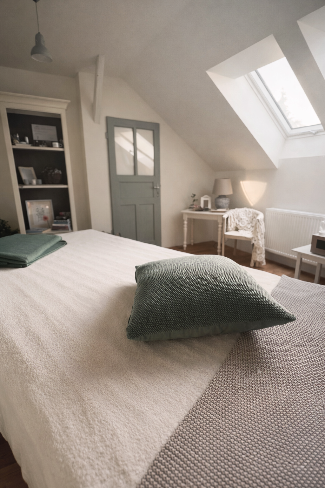
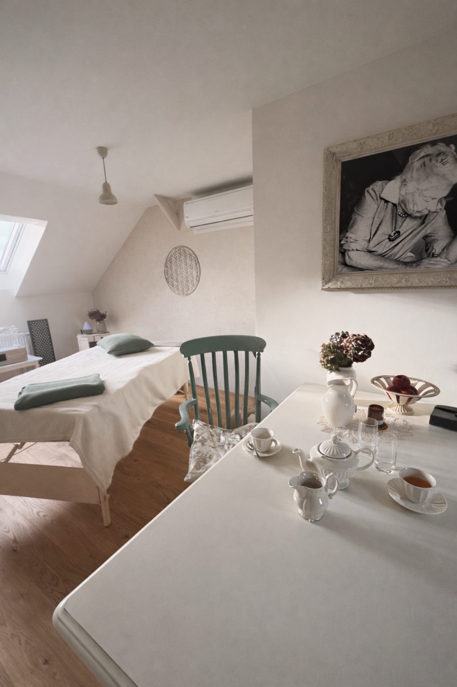
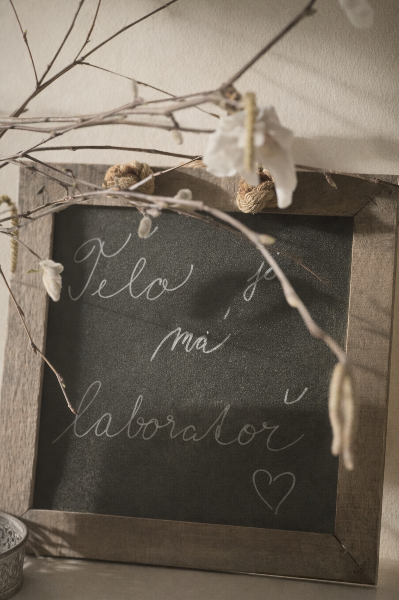
Strukturální integrace je metoda práce s tělem zaměřená na fascie a jejich uspořádání v gravitačním poli. Vychází z předpokladu, že tělo funguje jako propojený celek, kde změna v jedné části ovlivňuje celek.
Pomocí jemné manuální práce a vědomého pohybu dochází k postupné reorganizaci tkání, zlepšení držení těla a uvolnění chronického napětí.
Výsledkem je efektivnější pohyb, menší zatížení kloubů a větší stabilita i lehkost v každodenním fungování.
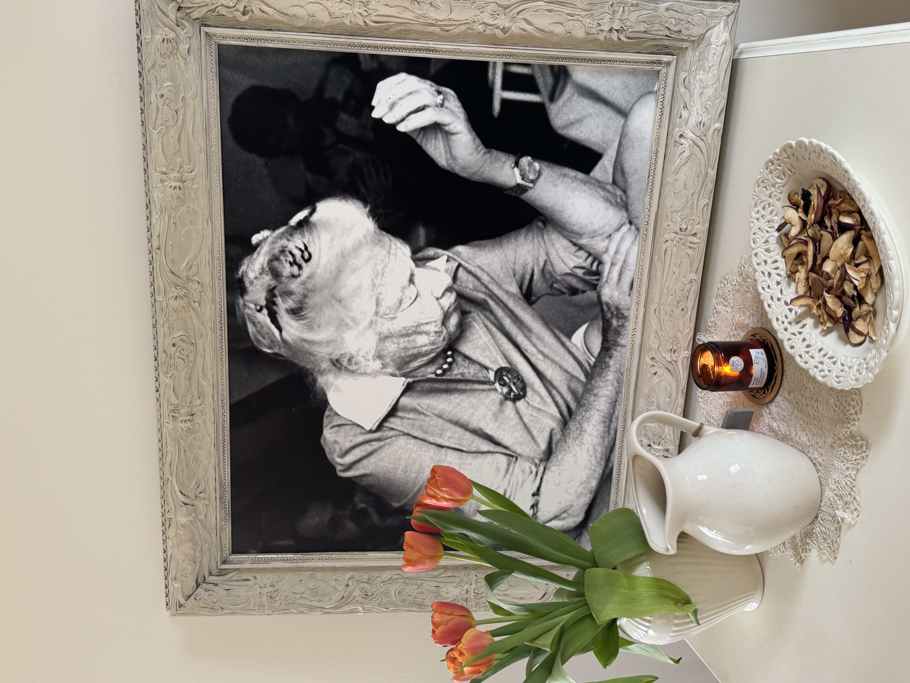
Metoda strukturální integrace probíhá v sérii 10 na sebe navazujících setkání, které postupně vedou k celkové reorganizaci těla.
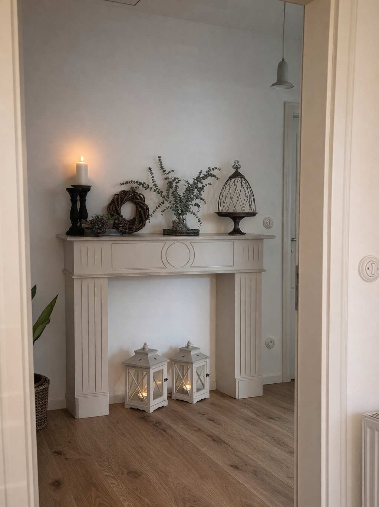
Pro každého, kdo chce své tělo vnímat víc jako celek a hledá cestu k lehkosti a přirozenému pohybu.
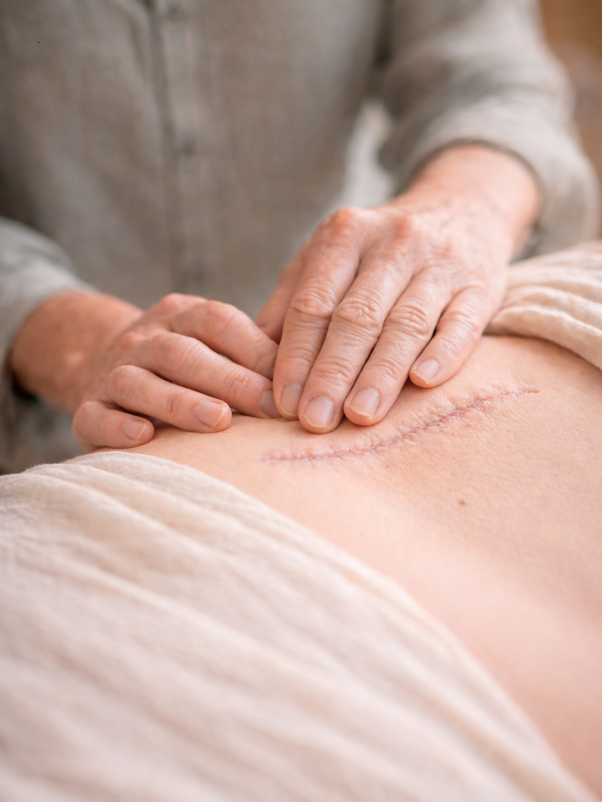
V rámci strukturální integrace se s nimi pracuje jemně a cíleně, aby se obnovila jejich pružnost, citlivost a propojení s okolní tkání.
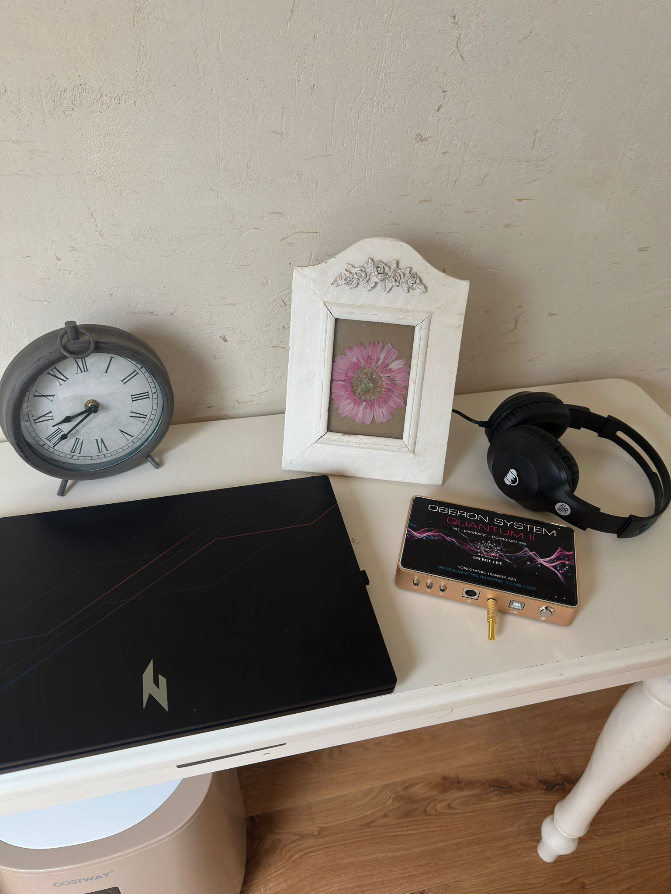
Kvantová diagnostika pomáhající odhalit energetické nerovnováhy v těle.
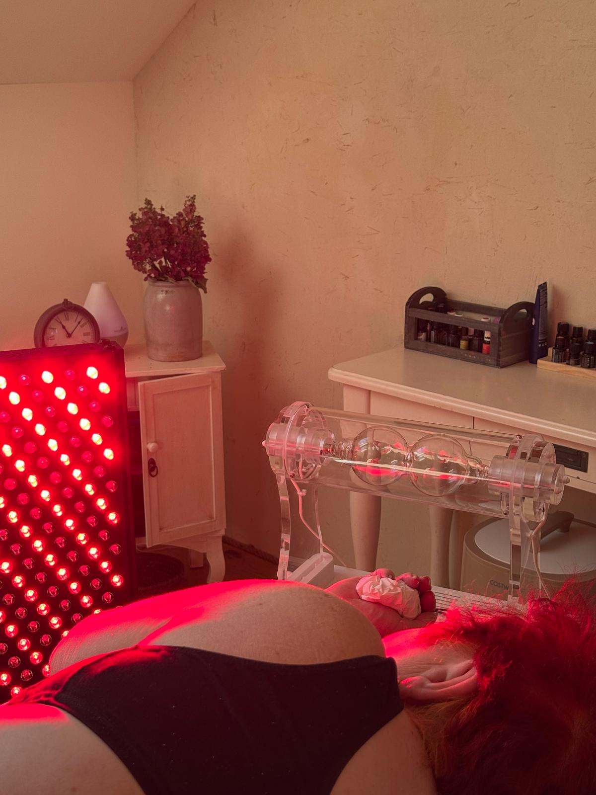
Frekvenční technologie podporující harmonizaci organismu a přirozenou regeneraci.
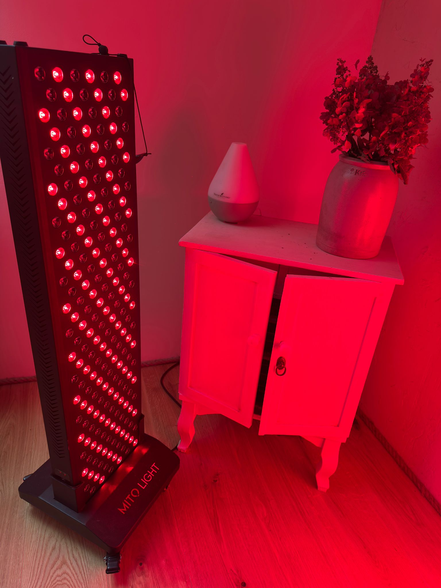
Terapie červeným světlem podporující regeneraci buněk a vitalitu.
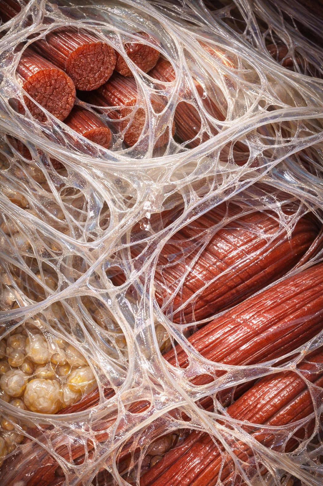
Strukturální integrace pracuje s fasciemi – tkání, která propojuje celé tělo do jednoho funkčního celku. Fascie nejsou jen „spojovací tkáň“. Jsou inteligentní komunikační sítí těla, která reaguje na pohyb, napětí, emoce i prostředí.
Právě skrze práci s fasciemi dochází ke změně držení těla, uvolnění chronického napětí a návratu k přirozené rovnováze v gravitačním poli.
Fascie jsou živá matrice, která nejen obaluje svaly a orgány, ale zároveň ukládá zkušenosti, pamatuje si trauma a ovlivňuje nervový systém v reálném čase.
To, co se dříve považovalo za „výplň“, je dnes vnímáno jako jeden z nejdůležitějších smyslových a regulačních systémů v těle.
Jsou tvořeny kolagenem, vodou a dalšími látkami, ale jejich skutečná hodnota není jen ve struktuře – nýbrž v informacích, které nesou.
Fascie obsahují velké množství receptorů – v mnoha ohledech více než kůže – a reagují na tlak, pohyb, dotek i emoce ještě dříve, než si je uvědomíme.
Ukládají nejen fyzické zážitky, ale i to, co jsme nedokázali prožít nebo dokončit.
Každý nedokončený pohyb, potlačená reakce nebo zadržená emoce zůstává v systému jako napětí.
Tělo si tyto vzorce pamatuje. Ne v hlavě – ale v tkáni.
Když dojde k přetížení nebo traumatu, systém může „zamrazit“ určité zkušenosti, aby nás ochránil. Bolest může odeznít, ale informace zůstává.
Po čase se může projevit jako chronické napětí, omezení pohybu nebo pocit nepohodlí bez jasné příčiny.
Fascie fungují jako emoční archiv. Uchovávají zkušenosti, které nebyly dokončeny nebo integrovány.
Proto někdy reagujeme nepřiměřeně – tělo reaguje na základě minulých vzorců, ne aktuální situace.
Není to „jen v hlavě“. Je to uložené v těle.
Fascie mají svůj jazyk – jazyk napětí, pohybu, rytmu a vnímání.
A právě tento jazyk se v rámci strukturální integrace znovu učíme vnímat.
Práce s fasciemi není o síle nebo tlaku. Fascie nereagují primárně na tlak – reagují na pocit bezpečí.
Uvolňují se tehdy, když jsou vnímány, respektovány a když tělo dostane prostor se reorganizovat.
Proto nejde o „opravu“ těla, ale o jeho znovunapojení.
Fascie propojují tělo a mysl. Nesou emoce, které je potřeba nejen pochopit, ale i fyzicky prožít.
Jsou nepřetržitou sítí v celém těle – změna v jedné části ovlivňuje celek.
Proto se bolest nemusí objevovat tam, kde vznikla.
Bolest často nemá jasnou strukturu – má svůj příběh.
A právě skrze práci s tělem lze tyto příběhy postupně dokončit a uvolnit.
Strukturální integrace tak není jen práce s pohybem nebo držením těla – je to proces návratu k přirozené lehkosti, stabilitě a vnímání sebe sama.
Nejde o to tělo „opravit“, ale připomenout mu jeho původní uspořádání.
Fascie nepotřebují sílu – potřebují pozornost, pomalost a vztah.
Tělo ví.
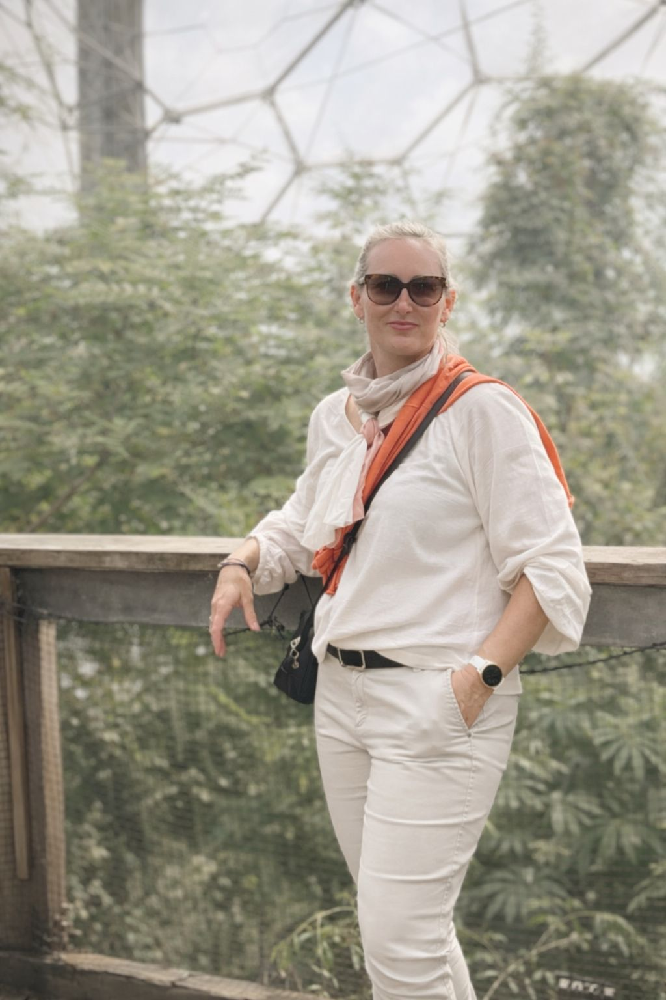
Jmenuji se Kateřina Lacko. Jsem maminka tří dětí, která miluje život v jeho přirozené jednoduchosti. Inspiruje mě příroda, vědomý pohyb, pedagogika Montessori, cestování i zachycování okamžiků skrze fotografii. Blízký je mi celostní a respektující přístup ke zdraví i k lidskému tělu.
Patnáct let jsem pracovala ve zdravotně-sociální oblasti. V určitém období mě vlastní vyčerpání a bolesti zad přivedly k hlubšímu zastavení a naslouchání svému tělu. Právě tato zkušenost mě postupně přivedla k práci se strukturální integrací.
Dnes provázím lidi na cestě k větší lehkosti, stabilitě a přirozené rovnováze v těle.
Pro svou práci jsem vytvořila prostor, který je klidný, světlý a otevřený. Místo, kde se může na chvíli zastavit čas. Prostor, ve kterém se prolíná lehkost, celistvost a láska k životu – v jemném dialogu s gravitací, která nás drží a nese.
Kateřina Lacko
Tel: +420 603 243 678
Email: lacko.katerina@seznam.cz
Adresa: Litvínovice 32, Stecherův Mlýn